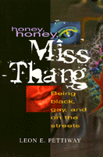

Accounts of five gay, black, drug-using transvestites who struggle to create realities that are not mired in misery and deviance but proclaim their membership in the human family
Accounts of five gay, black, drug-using transvestites who struggle to create realities that are not mired in misery and deviance but proclaim their membership in the human family


 Accounts of five gay, black, drug-using transvestites who struggle to create realities that are not mired in misery and deviance but proclaim their membership in the human family
Accounts of five gay, black, drug-using transvestites who struggle to create realities that are not mired in misery and deviance but proclaim their membership in the human family

|  |
Honey, Honey, Miss ThangBeing Black, Gay, and on the StreetsLeon E. Pettiwaypaper EAN: 978-1-56639-498-7 (ISBN: 1-56639-498-8) |
Nominated for the Ninth Annual Lambda Literary Awards, category of Transgender, 1996
"I remember when I first hit the streets and I started coming downtown I was dressed up, right. I was wearing a white see-through dress. I had a pair of heels... Now, I'm tall. With heels on I'm even taller. I'm about six foot, three inches, and with a heel like this on, and it had a gold plate in the back and strapped around the ankle, hair blowing in the wind like a commercial. And I was walking across High Street and one car hit another car. I thought it was fantastic, because they were staring at me. One time I was waiting for a light, and I heard them whisper, 'That's a model.' And I was just strutting, you know."
—Detra
Many straight Americans would never embrace homosexuals as neighbors, co-workers, or friends. Still less would they accept as equals those transgendered individuals who work the streets to provide themselves with drug money.
This book seeks to change that perception. It celebrates the lives of Shontae, China, Keisha, Detra, and Monique, five Afro-American gay hustlers who struggle to survive and to maintain a life of dignity and value in the face of their drug use and criminal activity. As individuals they vary in terms of background, the manner in which they entered the transgendered world, and the nature of their initiation into the drug subculture. None of them has escaped the ravages of urban decline, crime, drugs, and poverty that accompany life in an inner city, but by the same token, none of them has capitulated to the stresses with which they live.
It is impossible to read these accounts and not come away emotionally drained. As Monique explains, their lives take place in a world of chances. "You take a chance on living or dying, on being hurt or not being hurt, a chance on finding a friend or finding an enemy." It is from this world that their voices speak so eloquently about their families, hustling, sexuality, sexual abuse, friendship, and intimacy.
By letting these women speak, Leon E. Pettiway evokes questions and encourages discussion and a re-evaluation of those who are labeled as deviant. Pettiway reaches beyond academic convention to offer a view with depth and emotion that mere statistics could never provide. While the poverty and often destructive lifestyle of these women may be gut-wrenching, their experiences reveal joy, pain, and the profound strength of the human spirit with which we can all identify. These lives have much to teach us about ourselves and those we label as "other."
Excerpt available at www.temple.edu/tempress
"Using the first person accounts of five African American, drug-using, street-walking, cross-dressing gay hustlers, Pettiway, a professor of criminal justice at Indiana University, breaks free of some criminologists' tendency to view the marginalized as monolithically deviant, negative or hopeless. ...His goal is to present them 'more nearly as they experience themselves' and to suggest policies that more closely address their understanding of who they are."
—Publishers Weekly
Acknowledgments
Introduction
1. Shontae
2. China
3. Detra
4. Keisha
5. Monique
 | Leon E. Pettiway is Associate Professor, Department of Criminal Justice at Indiana University, Bloomington. |
Sexuality Studies/Sexual Identity
Law and Criminology
© 2015 Temple University. All Rights Reserved. This page: http://www.temple.edu/tempress/titles/1296_reg.html.